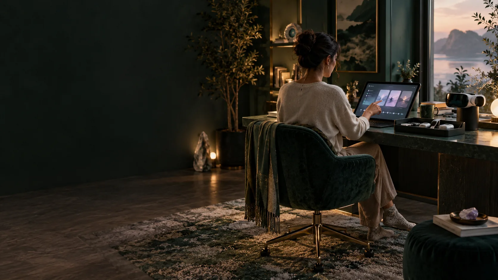

GENESIS / EXPERIENCE DESIGN
A personal adventure in depth.
A participant chooses life categories, explores their own words and revisits possible selves. Dialogue, rest, simulation and life outside the session form a continuing loop.
A starting point before Genesis.
The proposed Verse Box public station offers a lower-cost introduction through demonstrations and assisted personal or community projects. Genesis would be a separate opt-in step, with its own participant agreements and pressure-session requirements. The proposed trial still needs hosts, tested equipment, funding and agreed operating arrangements.
An active self-reflection workspace.
The Geode needs usable space for haptic touchscreens or VR/XR, wearable sensors and receiver hardware. The seated participant must be able to reach the controls, move comfortably and review records, with equipment stowed clear of entry and assisted exit.
- A reachable adjustable display and a defined VR/XR use envelope, with a headset dock beside the seat.
- A serviceable sensor connection bay, cable management and provision for a compatible wireless receiver where selected.
- Screens and accessories stow alongside the seat, keeping the entry, assisted-transfer route and door operation clear.
- The complete equipment configuration requires review for the actual chamber environment; experience interfaces remain separate from independent chamber controls.
An adult entry, shaped around a real life.
The source study design is for adults aged eighteen and over. Entry considers intentions, resources, responsibilities, access needs, selected categories, embodied references and informed agreements. A participant understands the recording arrangement and the actual operating team before a pressure session.
Choose. Declare. Explore. Return.
A category might concern belonging, work, home, creativity or remembered travel. The participant makes a declaration in their own language. Past, present and possible best selves provide lenses for reflection. A simulation rehearses a possibility; a later real activity has its own observation record.
- A remembered event retains the source and the person’s confidence.
- An imagined scenario is labelled as imagined.
- A model interpretation points to the material it used.
- A correction links the revised account to the earlier version.
Polarity has more than one direction.
Attraction, repulsion, urge, craving, giving and receiving are separately described. Wanting leadership while disliking public scrutiny is meaningful context. The design keeps these relationships instead of flattening them into a single positive-to-negative score.
Progress and feature requirements.
Progress is reviewed through corrections to the personal matrix, demonstrated skills and the outcomes of chosen activities. Feature unlocks state their baseline, data, skill and permission requirements before participation.
The wider life continues.
After the pressure programme, twin socialising tests the relationship in ordinary situations. Remembered travel contributes during Genesis; new physical travel is a later chosen activity after the pressure programme and relevant socialising.